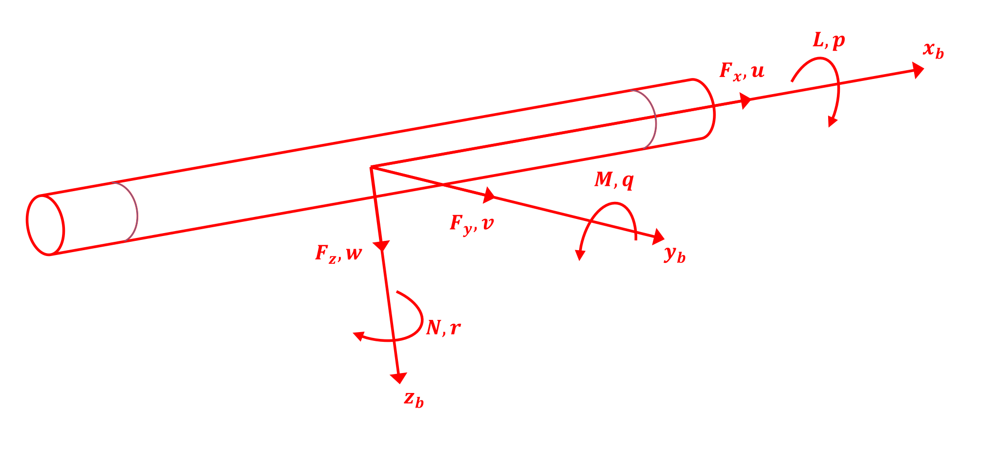

Kinematics#
Rigid Body Transformations described the position and the attitude of a body at a single instant: the frames, the rotation matrices, and the representations of an attitude. Kinematics lets these quantities evolve in time. It describes the motion without its causes: given the velocity and the body angular rates, it tells how the position and the attitude change.
The forces and the moments that change the velocity and the angular rates
are the subject of the next page, Dynamics.
Together, the kinematic equations of this page and the dynamic equations of the next one
form the equations of motion of the eqm module.
Nomenclature#
The position of the center of mass of a body is the vector \(r\), with the Cartesian coordinates \((x, y, z)\) in the reference frame. Its velocity relative to the reference frame, which the equations of motion assume to be inertial (see Reference Frames), is the vector \(V\), with the components \((v_x, v_y, v_z)\) in the reference frame. (The position vector \(r\) is distinct from the yaw rate \(r\) below; the context, a vector or a scalar, tells them apart.)
The motion of the body frame is described by the components of the velocity and the angular rate on the body axes (Fig-1). The six projections of the linear and angular velocity vectors on the moving body frame axes are the six degrees of freedom. The attitude is given by the 3-2-1 Euler angles, listed as roll, pitch, yaw \((\varphi, \theta, \psi)\) and applied in the order yaw, pitch, roll (see Euler Angles), or by a quaternion (see Quaternion).

Fig-1: Forces, velocities, moments, and angular rates in the body frame. The forces and the moments are discussed in Dynamics.#
Axis |
Inertial velocity \(V\) |
Angular displacement |
Angular velocity \(\omega\) |
|---|---|---|---|
\(x_b\) |
\(u\) |
\(\varphi\) (roll) |
\(p\) (roll rate) |
\(y_b\) |
\(v\) |
\(\theta\) (pitch) |
\(q\) (pitch rate) |
\(z_b\) |
\(w\) |
\(\psi\) (yaw) |
\(r\) (yaw rate) |
The same inertial velocity \(V\) has the components \((u, v, w)\) on the body axes and \((v_x, v_y, v_z)\) on the reference axes. The angular velocity of the body relative to the reference frame, \(\omega = [p, q, r]^T\), is expressed in the body frame.
Note that \((u, v, w)\) are the body components of the inertial velocity, the velocity relative to the ground. They differ from the body components of the air-relative velocity when there is wind (see Translational Kinematics).
Translational Kinematics#
The rate of change of the position is the velocity:
Or, in a vector form, \(\dot{r} = V\). c4dynamics integrates the position in the reference frame, where the components of the velocity are simply the derivatives of the coordinates.
Body components of the inertial velocity
When the inertial velocity is needed in the body frame, it is rotated by the Body from Reference matrix:
Air-relative velocity
Aerodynamic forces depend on the motion of the body relative to the air, not relative to the ground. With a wind velocity \(V_{wind}\), expressed in the reference frame, the air-relative velocity and its body components are:
In still air, \(V_a = V\) and \((u_a, v_a, w_a) = (u, v, w)\). The position is always integrated from the inertial velocity \(V\). The air-relative velocity enters only the force models, e.g. the drag of the quadcopter.
These equations are the complete kinematics of a point mass
(a datapoint).
A rigid body adds the attitude.
Attitude Kinematics: Euler Angles#
As a rigid body changes its orientation, the Euler angles change. The rates of the Euler angles are related to the body angular rates \((p, q, r)\).
Derivation
Each Euler rate is a rotation about the axis of its own elementary rotation: \(\dot{\psi}\) about the reference \(z\) axis, \(\dot{\theta}\) about the intermediate \(y\) axis after the yaw rotation, and \(\dot{\varphi}\) about the body \(x\) axis. Expressing the three in the body frame by the elementary rotations of Euler Angles and summing them gives the body rates:
Note that the matrix is not a rotation matrix. The three Euler rates are about three axes that are not mutually perpendicular, therefore \([\dot{\varphi}, \dot{\theta}, \dot{\psi}]\) is not a vector, and it is not simply a rotated version of \(\omega\).
The Euler angles rates
Inverting the matrix gives the rates of the Euler angles, which are the attitude part of the rigid body state equations:
The singularity
The determinant of the matrix above is \(\cos\theta\). As the pitch angle approaches \(\theta = \pm 90°\), the matrix becomes singular, the terms \(\tan\theta\) and \(1 / \cos\theta\) grow without bound, and so do \(\dot{\varphi}\) and \(\dot{\psi}\). This is the time domain face of the gimbal lock of Euler Angles: at this attitude, roll and yaw are the same rotation, and a finite body rate maps into infinite Euler rates. Near the singularity, the numerical integration loses accuracy (see the example below).
For vehicles that never approach it, such as a transport aircraft in level flight or a car on the road, the Euler angles are a natural and intuitive choice. Agile vehicles, however, such as drones performing flips, aerobatic aircraft, missiles in a vertical launch, or tumbling spacecraft, may reach any attitude. For those, the attitude is better propagated as a quaternion.
Attitude Kinematics: Quaternion#
The rate of change of the attitude quaternion \(q = [q_w, q_x, q_y, q_z]\) (see Quaternion) is related to the body rates by the quaternion product (\(\otimes\)) of the quaternion and the angular velocity [DI]:
Or equivalently, in a matrix form:
And in a scalar form, which is the attitude part of the quaternion state equations:
Note the two different meanings of the symbol \(q\): the quaternion \(q = [q_w, q_x, q_y, q_z]\), and the pitch rate \(q\), the second component of the angular rates \((p, q, r)\).
Compared to the Euler angles rates, the quaternion rates:
Contain no trigonometric functions and no division, and are therefore free of singularities at any attitude.
Are linear in the quaternion components, which makes them cheap to evaluate and well behaved in numerical integration.
Normalization
The exact solution of the quaternion rates preserves the unit norm. Numerical integration, however, does not preserve it exactly. Small errors accumulate, and the quaternion drifts from a unit quaternion. A standard remedy is to normalize the quaternion after each integration step:
quatbody.inteqm and
int6q normalize at the end of each step.
Setting quatbody.quat
normalizes as well, which is the way to normalize after an external integrator
such as scipy.integrate.solve_ivp.
Choosing a Representation#
The two rigid body state objects of c4dynamics differ only in the attitude representation. The translational kinematics, and the dynamics of the next page, are the same.
Attitude states |
\(\varphi, \theta, \psi\) |
\(q_w, q_x, q_y, q_z\) |
State vector |
12 variables |
13 variables |
Singular attitude |
\(\theta = \pm 90°\) |
None |
Constraint |
None |
\(\|q\| = 1\), normalized after each step |
Euler angles |
The states themselves |
|
Typical use |
Vehicles that stay away from a vertical attitude |
Vehicles that may reach any attitude |
Both objects provide the rotation matrices of their current attitude,
BR and
RB.
Away from the singularity, both produce the same motion.
Example#
Import c4dynamics and numpy:
>>> import c4dynamics as c4d
>>> import numpy as np
Euler rates near the singularity
A body pitched up by \(89.9°\), with a small yaw rate of 0.1 rad/s.
The Euler angles rates \((\dot{\varphi}, \dot{\theta}, \dot{\psi})\)
of eqm6 explode,
while the quaternion rates \((\dot{q}_w, \dot{q}_x, \dot{q}_y, \dot{q}_z)\)
of eqm6q stay small:
>>> rb = c4d.rigidbody(theta = 89.9 * c4d.d2r, r = 0.1)
>>> c4d.eqm.eqm6(rb, np.zeros(3), np.zeros(3))[6:9]
[57.3 0 57.3]
>>> qb = c4d.quatbody(theta = 89.9 * c4d.d2r, r = 0.1)
>>> c4d.eqm.eqm6q(qb, np.zeros(3), np.zeros(3))[6:10]
[0 0.035 0 0.035]
Propagation through a near vertical attitude
Two bodies with the same constant body rates, \(\omega = [0, 1, 0.1]\) rad/s. With no moments and equal moments of inertia, the body rates stay constant (see Dynamics), so only the kinematics act. During the run, the pitch angle passes within \(5°\) of the vertical:
>>> rb = c4d.rigidbody(q = 1, r = 0.1)
>>> qb = c4d.quatbody(q = 1, r = 0.1)
>>> rb.I = [1, 1, 1]
>>> qb.I = [1, 1, 1]
>>> dt = 0.01
>>> for t in np.arange(0, 3, dt):
... rb.inteqm(np.zeros(3), np.zeros(3), dt)
... qb.inteqm(np.zeros(3), np.zeros(3), dt)
A constant \(\omega\) is a rotation about a fixed axis \(n = \omega / \|\omega\|\) through the angle \(\alpha = \|\omega\| \cdot t\), so the exact final attitude follows from the definition of the quaternion:
>>> w = np.array([0, 1, 0.1])
>>> alpha, n = np.linalg.norm(w) * 3, w / np.linalg.norm(w)
>>> q_exact = np.hstack([np.cos(alpha / 2), n * np.sin(alpha / 2)])
>>> c4d.rotmat.quat2euler(q_exact) * c4d.r2d
[168.53 7.22 179.27]
The quaternion body lands on the exact attitude. The Euler angles body accumulated an error of more than \(1°\) in roll while passing near the singularity:
>>> np.array([qb.phi, qb.theta, qb.psi]) * c4d.r2d
[168.53 7.22 179.27]
>>> np.array([rb.phi, rb.theta, rb.psi]) * c4d.r2d
[169.82 7.27 179.43]
References#
See [HS] for the derivation of the Euler angles kinematics, and [DI] for the quaternion kinematics (on the Rigid Body Transformations page).
See Also#
Previous: frames, rotation matrices, and attitude representations |
|
Next: the forces and the moments that drive the velocity and the body rates |
|
A rigid body state object with an Euler angles attitude |
|
A rigid body state object with a quaternion attitude |
|
Rigid body state derivatives, with an Euler angles or a quaternion attitude |